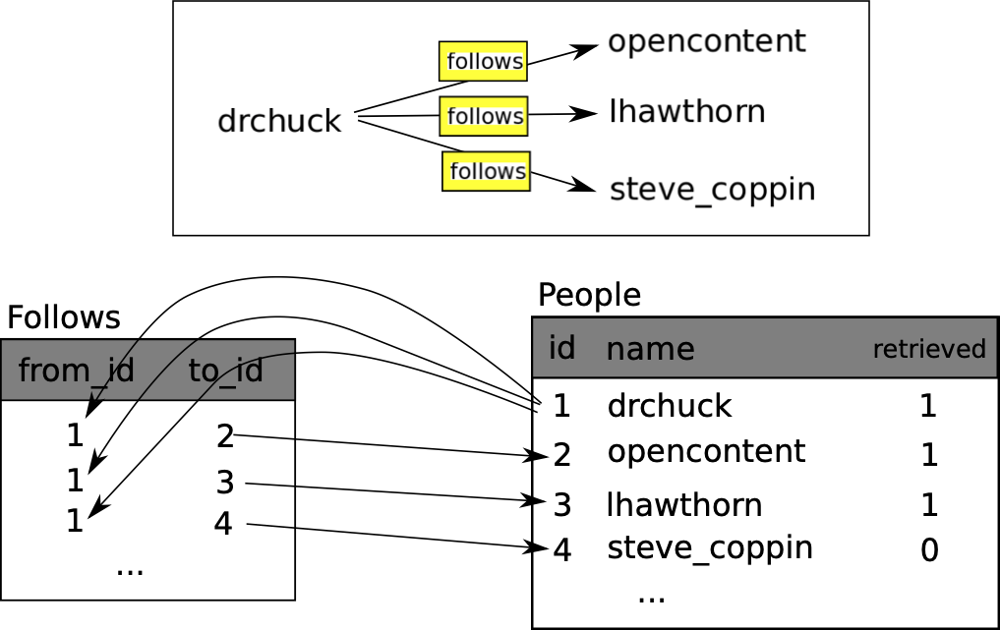

library(RSQLite)
music_db <- "data/music.sqlite"
conn <- dbConnect(drv = SQLite(), dbname= music_db)
dbSendQuery(conn, "INSERT INTO Tracks (title, plays) VALUES ( ?, ? )", c('Thunderstruck', 20))
dbSendQuery(conn, "INSERT INTO Tracks (title, plays) VALUES ( ?, ? )", c('My Way', 15))
dbDisconnect(conn)2 데이터베이스와 SQL
2.1 데이터베이스가 뭔가요?
데이터베이스(database)는 데이터를 저장하기 위한 목적으로 조직된 파일이다. 대부분의 데이터베이스는 키(key)와 값(value)를 매핑한다는 의미에서 딕셔너리처럼 조직되었다. 가장 큰 차이점은 데이터베이스는 디스크(혹은 다른 영구 저장소)에 위치하고 있어서, 프로그램 종료 후에도 정보가 계속 저장된다. 데이터베이스가 영구 저장소에 저장되어서, 컴퓨터 주기억장치(memory) 크기에 제한받는 딕셔너리보다 훨씬 더 많은 정보를 저장할 수 있다.
딕셔너리처럼, 데이터베이스 소프트웨어는 엄청난 양의 데이터 조차도 매우 빠르게 삽입하고 접근하도록 설계되었다. 컴퓨터가 특정 항목으로 빠르게 찾아갈 수 있도록 데이터베이스에 인덱스(indexes)를 추가한다. 데이터베이스 소프트웨어는 인덱스를 구축하여 성능을 보장한다.
다양한 목적에 맞춰 서로 다른 많은 데이터베이스 시스템이 개발되어 사용되고 있다. Oracle, MySQL, Microsoft SQL Server, PostgreSQL, SQLite이 여기에 포함된다. 이 책에서는 SQLite를 집중해서 살펴볼 것이다. 왜냐하면 매우 일반적인 데이터베이스이며 파이썬에 이미 내장되어 있기 때문이다. 응용프로그램 내부에서 데이터베이스 기능을 제공하도록 SQLite가 다른 응용프로그램 내부에 내장(embedded)되도록 설계되었다. 예를 들어, 다른 많은 소프트웨어 제품이 그렇듯이, 파이어폭스 브라우져도 SQLite를 사용한다.
이번 장에서 기술하는 트위터 스파이더링 응용프로그램처럼 정보과학(Informatics)에서 마주치는 몇몇 데이터 조작 문제에 SQLite가 적합하다.
2.2 데이터베이스 개념
처음 데이터베이스를 볼때 드는 생각은 마치 엑셀같은 다중 시트를 지닌 스프레드쉬트(spreadsheet)같다는 것이다. 데이터베이스에서 주요 데이터 구조물은 테이블(tables), 행(rows), and 열(columns)이 된다.

관계형 데이터베이스의 기술적인 면을 설명하면 테이블, 행, 열의 개념은 관계(relation), 튜플(tuple), 속성(attribute) 각각 형식적으로 매칭된다. 이번 장에서는 조금 덜 형식 용어를 사용한다.
2.3 파이어폭스 SQLite 관리자
SQLite 데이터베이스 파일에 있는 데이터를 다루기 위해서 이번장에서 주로 R 사용에 집중을 하지만, 다음 웹사이트에서 무료로 이용 가능한 SQLite 데이터베이스 매니저(SQLite Database Manager)로 불리는 파이어폭스 애드온(add-on)을 사용해서 좀더 쉽게 많은 작업을 수행할 수 있다. 파이어폭스 애드온은 크롬 확장 프로그램과 유사한 개념으로 파이어폭스는 개발자들이 많이 사용하는 웹브라우져 중 하나다.
브라우져를 사용해서 쉽게 테이블을 생성하고, 데이터를 삽입, 편집하고 데이터베이스 데이터에 대해 간단한 SQL 질의를 실행할 수 있다.
이러한 점에서 데이터베이스 매니저는 텍스트 파일을 작업할 때 사용하는 텍스트 편집기와 유사하다. 텍스트 파일에 하나 혹은 몇개 작업만 수행하고자 하면, 텍스트 편집기에서 파일을 열어 필요한 수정작업을 하고 닫으면 된다. 텍스트 파일에 작업할 사항이 많은 경우는 종종 간단한 R 프로그램을 작성하여 수행한다. 데이터베이스로 작업할 때도 동일한 패턴이 발견된다. 간단한 작업은 데이터베이스 매니저를 통해서 수행하고, 좀더 복잡한 작업은 R로 수행하는 것이 더 편리하다.
2.4 데이터베이스 테이블 생성
데이터베이스는 R 리스트 혹은 딕셔너리보다 좀더 명확히 정의된 구조를 요구한다. 1
데이터베이스에 테이블(table)을 생성할 때, 열(column)의 명칭과 각 열(column)에 저장하는 테이터 형식을 사전에 정의해야 한다. 데이터베이스 소프트웨어가 각 열의 데이터 형식을 인식하게 되면, 데이터 형식에 따라 데이터를 저장하고 찾아오는 방법을 가장 효율적인 방식을 선택할 수 있다.
다음 url에서 SQLite에서 지원되는 다양한 데이터 형식을 살펴볼 수 있다.
처음에는 데이터 구조를 사전에 정의하는 것이 불편하게 보이지만, 대용량의 데이터가 데이터베이스에 포함되더라도 데이터의 빠른 접근을 보장하는 잇점이 있다.
데이터베이스 파일과 데이터베이스에 두개의 열을 가진 Tracks 이름의 테이블을 생성하는 코드는 다음과 같다.
연결 (connect) 연산은 현재 디렉토리 data/music.sqlite3 파일에 저장된 데이터베이스에 “연결(connection)”한다. 파일이 존재하지 않으면, 자동 생성된다. “연결(connection)”이라고 부르는 이유는 때때로 데이터베이스가 응용프로그램이 실행되는 서버로부터 분리된 “데이터베이스 서버(database server)”에 저장되기 때문이다. 지금 간단한 예제 파일의 경우에 데이터베이스가 로컬 파일 형태로 R 코드 마찬가지로 동일한 디렉토리에 있다.
파일을 다루는 파일 핸들(file handle)처럼 데이터베이스에 저장된 파일에 연산을 수행하기 위해서 커서(cursor)를 사용한다. cursor()를 호출하는 것은 개념적으로 텍스트 파일을 다룰 때 readLines()을 호출하는 것과 개념적으로 매우 유사하다.

커서가 생성되면, dbGetQuery() 함수를 사용하여 데이터베이스 콘텐츠에 명령어 실행을 할 수 있다.
데이터베이스 명령어는 특별한 언어로 표현된다. 단일 데이터베이스 언어를 학습하도록 서로 다른 많은 데이터베이스 업체 사이에서 표준화되었다.
데이터베이스 언어를 SQL(Structured Query Language 구조적 질의 언어)로 부른다.
상기 예제에서, 데이터베이스에 두개의 SQL 명령어를 실행했다. 관습적으로 데이터베이스 키워드는 대문자로 표기한다. 테이블명이나 열의 명칭처럼 사용자가 추가한 명령어 부분은 소문자로 표기한다.
첫 SQL 명령어는 만약 존재한다면 데이터베이스에서 Tracks 테이블을 삭제한다. 동일한 프로그램을 실행해서 오류 없이 반복적으로 Tracks 테이블을 생성하도록하는 패턴이다. DROP TABLE 명령어는 데이터베이스 테이블 및 테이블 콘텐츠 전부를 삭제하니 주의한다. (즉, “실행취소(undo)”가 없다.)
`dbGetQuery(conn, 'DROP TABLE IF EXISTS Tracks ') `두번째 명령어는 title 문자형 열과 plays 정수형 열을 가진 Tracks으로 명명된 테이블을 생성한다.
`dbGetQuery(conn, 'CREATE TABLE Tracks (title TEXT, plays INTEGER)')`이제 Tracks으로 명명된 테이블을 생성했으니, SQL INSERT 연산을 통해 테이블에 데이터를 넣을 수 있다. 다시 한번, 데이터베이스에 연결하여 커서(cursor)를 얻어 작업을 시작한다. 그리고 나서 커서를 사용해서 SQL 명령어를 수행한다.
SQL INSERT 명령어는 어느 테이블을 사용할지 특정한다. 그리고 나서 (title, plays) 포함할 필드 목록과 테이블 새로운 행에 저장될 VALUES 나열해서 신규 행을 정의를 마친다. 실제 값이 execute() 호출의 두번째 매개변수로 튜플 ('My Way', 15) 로 넘겨는 것을 표기하기 위해서 값을 물음표 (?, ?)로 명기한다.
library(RSQLite)
music_db <- "data/music.sqlite"
conn <- dbConnect(drv = SQLite(), dbname= music_db)
dbSendQuery(conn, "INSERT INTO Tracks (title, plays) VALUES ( ?, ? )",
c('Thunderstruck', 20))
dbSendQuery(conn, "INSERT INTO Tracks (title, plays) VALUES ( ?, ? )",
c('My Way', 15))
print('Tracks:')
dbGetQuery(conn, 'SELECT title, plays FROM Tracks')
dbSendQuery(conn, "DELETE FROM Tracks WHERE plays < 100")
dbDisconnect(conn)먼저 테이블에 두개 열을 삽입(INSERT)하여 데이터를 데이터베이스에 저장되도록 했다. 그리고 나서, SELECT 명령어를 사용하여 테이블에 방금 전에 삽입한 행을 불러왔다. SELECT 명령어에서 데이터를 어느 열(title, plays)에서, 어느 테이블Tracks에서 가져올지 명세한다. 프로그램 실행결과는 다음과 같다.
> dbGetQuery(conn, 'SELECT title, plays FROM Tracks')
title plays
1 Thunderstruck 20
2 My Way 15프로그램 마지막에 SQL 명령어를 실행 사용해서 방금전에 생성한 행을 모두 삭제(DELETE)했기 때문에 프로그램을 반복해서 실행할 수 있다. 삭제(DELETE) 명령어는 WHERE 문을 사용하여 선택 조건을 표현할 수 있다. 따라서 명령문에 조건을 충족하는 행에만 명령문을 적용한다. 이번 예제에서 기준이 모든 행에 적용되어 테이블에 아무 것도 없게 된다. 따라서 프로그램을 반복적으로 실행할 수 있다. 삭제(DELETE)를 실행한 후에 데이터베이스에서 데이터를 완전히 제거했다.
2.5 SQL 요약
지금까지, R 예제를 통해서 SQL(Structured Query Language)을 사용했고, SQL 명령어에 대한 기본을 다루었다. 이번 장에서는 SQL 언어를 보고 SQL 구문 개요를 살펴본다.
대단히 많은 데이터베이스 업체가 존재하기 때문에 호환성의 문제로 SQL(Structured Query Language)이 표준화되었다. 그래서, 여러 업체가 개발한 데이터베이스 시스템 사이에 호환하는 방식으로 커뮤니케이션 가능하다.
관계형 데이터베이스는 테이블, 행과 열로 구성된다. 열(column)은 일반적으로 텍스트, 숫자, 혹은 날짜 자료형을 갖는다. 테이블을 생성할 때, 열의 명칭과 자료형을 지정한다.
CREATE TABLE Tracks (title TEXT, plays INTEGER)테이블에 행을 삽입하기 위해서 SQL INSERT 명령어를 사용한다.
INSERT INTO Tracks (title, plays) VALUES ('My Way', 15)INSERT 문장은 테이블 이름을 명기한다. 그리고 나서 새로운 행에 놓고자 하는 열/필드 리스트를 명시한다. 그리고 나서 키워드 VALUES와 각 필드 별로 해당하는 값을 넣는다.
SQL SELECT 명령어는 데이터베이스에서 행과 열을 가져오기 위해 사용된다. SELECT 명령문은 가져오고자 하는 행과 WHERE절을 사용하여 어느 행을 가져올지 지정한다. 선택 사항으로 ORDER BY 절을 이용하여 반환되는 행을 정렬할 수도 있다.
SELECT * FROM Tracks WHERE title = 'My Way'* 을 사용하여 WHERE 절에 매칭되는 각 행의 모든 열을 데이터베이스에서 가져온다.
주목할 점은 R과 달리 SQL WHERE 절은 등식을 시험하기 위해서 두개의 등치 기호 대신에 단일 등치 기호를 사용한다. WHERE에서 인정되는 다른 논리 연산자는 <,>,<=,>=,!= 이고, 논리 표현식을 생성하는데 AND, OR, 괄호를 사용한다.
다음과 같이 반환되는 행이 필드값 중 하나에 따라 정렬할 수도 있다.
SELECT title,plays FROM Tracks ORDER BY title행을 제거하기 위해서, SQL DELETE 문장에 WHERE 절이 필요하다. WHERE 절이 어느 행을 삭제할지 결정한다.
SELECT title,plays FROM Tracks ORDER BY title다음과 같이 SQL UPDATE 문장을 사용해서 테이블에 하나 이상의 행 내에 있는 하나 이상의 열을 갱신(UPDATE)할 수 있다.
UPDATE Tracks SET plays = 16 WHERE title = 'My Way'UPDATE 문장은 먼저 테이블을 명시한다. 그리고 나서, SET 키워드 다음에 변경할 필드 리스트 와 값을 명시한다. 그리고 선택사항으로 갱신될 행을 WHERE절에 지정한다. 단일 UPDATE 문장은 WHERE절에서 매칭되는 모든 행을 갱신한다. 혹은 만약 WHERE절이 지정되지 않으면,테이블 모든 행에 대해서 갱신(UPDATE)을 한다.
네가지 기본 SQL 명령문(INSERT, SELECT, UPDATE, DELETE)은 데이터를 생성하고 유지 관리하는데 필요한 기본적인 4가지 작업을 가능케 한다.
2.6 데이터 모델링 기초
관계형 데이터베이스의 진정한 힘은 다중 테이블과 테이블 사이의 관계를 생성할 때 생긴다. 응용프로그램 데이터를 쪼개서 다중 테이블과 두 테이블 간에 관계를 설정하는 것을 데이터 모델링(data modeling)이라고 한다. 테이블 정보와 테이블 관계를 표현하는 설계 문서를 데이터 모델(data model)이라고 한다.
데이터 모델링(data modeling)은 상대적으로 고급 기술이여서 이번 장에서는 관계형 데이터 모델링의 가장 기본적인 개념만을 소개한다. 데이터 모델링에 대한 좀더 자세한 사항은 다음 링크에서 시작해 볼 수 있다.
트위터 스파이더 응용프로그램으로 단순히 한 사람의 친구가 몇명인지 세는 대신에, 모든 관계 리스트를 가지고서 특정 계정에 팔로잉하는 모든 사람을 찾는다.
모두 팔로잉하는 계정을 많이 가지고 있어서, 트위터(Twitter) 테이블에 단순히 하나의 열만을 추가해서는 해결할 수 없다. 그래서 친구를 짝으로 추적할 수 있는 새로운 테이블을 생성한다. 다음이 간단하게 상기 테이블을 생성하는 방식이다.
CREATE TABLE Pals (from_friend TEXT, to_friend TEXT)drchuck을 팔로잉하는 사람을 마주칠 때마다, 다음과 같은 형식의 행을 삽입한다.
INSERT INTO Pals (from_friend,to_friend) VALUES ('drchuck', 'lhawthorn')drchuck 트위터 피드에서 친구 20명을 처리하면서, “drchuck”을 첫 매개변수로 가지는 20개 레코드를 삽입해서 데이터베이스에 중복되는 많은 문자열이 생길 것이다.
문자열 데이터 중복은 데이터베이스 정규화(database normalization) 모범 사례(berst practice)를 위반하게 만든다. 기본적으로 데이터베이스 정규화는 데이터베이스에 결코 한번 이상 동일한 문자열을 저장하지 않는다. 만약 한번 이상 데이터가 필요하다면, 그 특정 데이터에 대한 숫자 키(key)를 생성하고, 그 키를 사용하여 실제 데이터를 참조한다.
실무에서, 문자열이 컴퓨터 주기억장치나 디스크에 저장되는 정수형 자료보다 훨씬 많은 공간을 차지하고 더 많은 처리시간이 비교나 정렬에 소요된다. 항목이 단지 수백개라면, 저장소나 처리 시간이 그다지 문제되지 않는다. 하지만, 데이터베이스에 수백만명의 사람 정보와 1억건 이상의 링크가 있다면, 가능한 빨리 데이터를 스캔하는 것이 정말 중요하다.
앞선 예제에서 사용된 Twitter 테이블 대신에 People로 명명된 테이블에 트위커 계정을 저장한다. People 테이블은 트위터 사용자에 대한 행과 관련된 숫자키를 저장하는 추가 열(column)이 있다. SQLite는 데이터 열의 특별한 자료형(INTEGER PRIMARY KEY)을 이용하여 테이블에 삽입할 임의 행에 대해서 자동적으로 키값을 추가하는 기능이 있다.
다음과 같이 추가적인 id 열을 가진 People 테이블을 생성할 수 있다.
CREATE TABLE People
(id INTEGER PRIMARY KEY, name TEXT UNIQUE, retrieved INTEGER)People 테이블의 각 행에서 친구 숫자를 더 이상 유지관리하고 있지 않음을 주목하세요. id 열 자료형으로 INTEGER PRIMARY KEY 선택할 때 함축되는 의미는 다음과 같다., 사용자가 삽입하는 각 행에 대해서 SQLite가 자동으로 유일한 숫자 키를 할당하고 관리하게 한다. UNIQUE 키워드를 추가해서 SQLite에 name에 동일한 값을 가진 두 행을 삽입하지 못하게 한다.
상기 Pals 테이블을 생성하는 대신에, 데이터베이스에 from_id, to_id 두 정수 자료형 열을 지닌 Follows 테이블을 생성한다. Follows 테이블은 from_id과 to_id의 조합으로 테이블이 유일하다는 제약사항도 가진다. (즉, 중복된 행을 삽입할 수 없다.)
CREATE TABLE Follows
(from_id INTEGER, to_id INTEGER, UNIQUE(from_id, to_id) )테이블에 UNIQUE절을 추가한다는 의미는 레코드를 삽입할 때 데이터베이스에서 지켜야하는 규칙 집합을 의사소통하는 것이다. 잠시 후에 보겠지만, 프로그램상에 편리하게 이러한 규칙을 생성한다. 이러한 규칙 집합은 실수를 방지하게 하고 코드를 작성을 간결하게 한다.
본질적으로 Follows 테이블을 생성할 때, “관계(relationship)”를 모델링하여 한 사람이 다른 사람을 “팔로우(follow)”하고 이것을 (a) 사람이 연결되어 있고, (b) 관계을 방향성이 나타나도록 숫자를 짝지어 표현한다.

2.6.1 테이블 제약사항
테이블 구조를 설계할 때, 데이터베이스 시스템에 몇 가지 규칙을 설정할 수 있다. 이러한 규칙은 실수를 방지하고 잘못된 데이터가 테이블에 들어가는 것을 막는다. 테이블을 생성할 때:
dbSendQuery( conn, 'CREATE TABLE IF NOT EXISTS People (id INTEGER PRIMARY KEY, name TEXT UNIQUE, retrieved INTEGER)")
dbSendQuery( conn, 'CREATE TABLE IF NOT EXISTS Follows (from_id INTEGER, to_id INTEGER, UNIQUE(from_id, to_id))')People 테이블에 name 칼럼이 유일(UNIQUE)함을 나타낸다. Follows 테이블의 각 행에서 두 숫자 조합은 유일하다는 것도 나타낸다. 하나 이상의 동일한 관계를 추가하는 것 같은 실수를 이러한 제약 사항을 통해서 방지한다.
다음 코드에서 이런 제약사항의 장점을 확인할 수 있다.
dbSendQuery( conn, 'INSERT OR IGNORE INTO People (name, retrieved) VALUES ( ?, 0)', c( 'friend', ) )INSERT 문에 OR IGNORE 절을 추가해서 만약 특정 INSERT가 “name이 유일(unique)해야 한다”를 위반하게 되면, 데이터베이스 시스템은 INSERT를 무시한다. 데이터베이스 제약 사항을 안전망으로 사용해서 무언가가 우연히 잘못되지 않게 방지한다.
마찬가지로, 다음 코드는 정확히 동일 Follows관계를 두번 추가하지 않는다.
dbSendQuery( conn, 'INSERT OR IGNORE INTO Follows (from_id, to_id) VALUES (?, ?)', c(id, friend_id) )다시 한번, Follows 행에 대해 지정한 유일한 제약사항을 위반하게 되면 INSERT 시도를 무시하도록 데이터베이스에 지시한다.
2.7 세 종류 키
지금까지 데이터를 다중 연결된 테이블에 넣고 키(keys)를 사용하여 행을 연결하는 방식으로 데이터 모델을 생성했는데, 키와 관련된 몇몇 용어를 살펴볼 필요가 있다. 일반적으로 데이터베이스 모델에서 세가지 종류의 키가 사용된다.
논리 키(logical key)는 “실제 세상”이 행을 찾기 위해서 사용하는 키다. 데이터 모델 예제에서,
name필드는 논리키다. 사용자에 대해서screen_name이고,name필드를 사용하여 프로그램에서 여러번 사용자 행을 찾을 수 있다. 논리 키에UNIQUE제약 사항을 추가하는 것이 의미있다는 것을 종종 이해하게 된다. 논리 키는 어떻게 바깥 세상에서 행을 찾는지 다루기 때문에, 테이블에 동일한 값을 가진 다중 행이 존재한다는 것은 의미가 없다.주키(primary key)는 통상적으로 데이터베이스에서 자동 대입되는 숫자다. 프로그램 밖에서는 일반적으로 의미가 없고, 단지 서로 다른 테이블에서 행을 열결할 때만 사용된다. 테이블에 행을 찾을 때, 통상적으로 주키를 사용해서 행을 찾는 것이 가장 빠르게 행을 찾는 방법이다. 주키는 정수형이어서, 매우 적은 저장공간을 차지하고 매우 빨리 비교 혹은 정렬할 수 있다. 이번에 사용된 데이터 모델에서
id필드가 주키의 한 예가 된다.외부 키(foreign key)는 일반적으로 다른 테이블에 연관된 행의 주키를 가리키는 숫자다. 이번에 사용된 데이터 모델의 외부 키의 사례는
from_id다.
주키 id필드명을 호출하고, 항상 외부키에 임의 필드명에 접미사로 _id 붙이는 명명규칙을 사용한다.
2.8 디버깅
SQLite 데이터베이스에 연결하는 파이썬 프로그램을 개발할 때 하나의 일반적인 패턴은 파이썬 프로그램을 실행하고 SQLite 데이터베이스 브라우저를 통해서 결과를 확인하는 것이다. 브라우저를 통해서 빠르게 프로그램이 정상적으로 작동하는지를 확인할 수 있다.
SQLite에서 두 프로그램이 동시에 동일한 데이터를 변경하지 못하기 때문에 주의가 필요하다. 예를 들어, 브라우저에서 데이터베이스를 열고 데이터베이스에 변경을 하고 “저장(save)”버튼을 누르지 않는다면, 브라우져는 데이터베이스 파일에 “락(lock)”을 걸구, 다른 프로그램이 파일에 접근하는 것을 막는다. 특히, 파일이 잠겨져 있으면 작성하고 있는 파이썬 프로그램이 파일에 접근할 수 없다.
해결책은 데이터베이스가 잠겨져 있어서 파이썬 코드가 작동하지 않는 문제를 피하도록 파이썬에서 데이터베이스에 접근하려 시도하기 전에 데이터베이스 브라우져를 닫거나 혹은 File 메뉴를 사용해서 브라우져 데이터베이스를 닫는 것이다.
2.9 용어정의
- 속성(attribute): 튜플 내부에 값의 하나. 좀더 일반적으로 “열”, “칼럼”, “필드”로 불린다.
- 제약(constraint): 데이터베이스가 테이블의 필드나 행에 규칙을 강제하는 것. 일반적인 제약은 특정 필드에 중복된 값이 없도록 하는 것(즉, 모든 값이 유일해야 한다.)
- 커서(cursor): 커서를 사용해서 데이터베이스에서 SQL 명령어를 수행하고 데이터베이스에서 데이터를 가져온다. 커서는 네트워크 연결을 위한 소켓이나 파일의 파일 핸들러와 유사하다.
- 데이터베이스 브라우져(database browser): 프로그램을 작성하지 않고 직접적으로 데이터베이스에 연결하거나 데이터베이스를 조작할 수 있는 소프트웨어.
- 외부 키(foreign key): 다른 테이블에 있는 행의 주키를 가리키는 숫자 키. 외부 키는 다른 테이블에 저장된 행사이에 관계를 설정한다.
- 인텍스(index): 테이블에 행이 추가될 때 정보 검색하는 것을 빠르게 하기 위해서 데이터베이스 소프트웨어가 유지관리하는 추가 데이터.
- 논리 키(logical key): “외부 세계”가 특정 행의 정보를 찾기 위해서 사용하는 키. 사용자 계정 테이블의 예로, 사람의 전자우편 주소는 사용자 데이터에 대한 논리 키의 좋은 후보자가 될 수 있다.
- 정규화(normalization): 어떠한 데이터도 중복이 없도록 데이터 모델을 설계하는 것. 데이터베이스 한 장소에 데이터 각 항목 정보를 저장하고 외부키를 이용하여 다른 곳에서 참조한다.
- 주키(primary key): 다른 테이블에서 테이블의 한 행을 참조하기 위해서 각 행에 대입되는 숫자 키. 종종 데이터베이스는 행이 삽입될 때 주키를 자동 삽입하도록 설정되었다.
- 관계(relation): 튜플과 속성을 담고 있는 데이터베이스 내부 영역. 좀더 일반적으로 “테이블(table)”이라고 한다.
- 튜플(tuple):데이터베이스 테이블에 단일 항목으로 속성 집합이다. 좀더 일반적으로 “행(row)”이라고 한다.